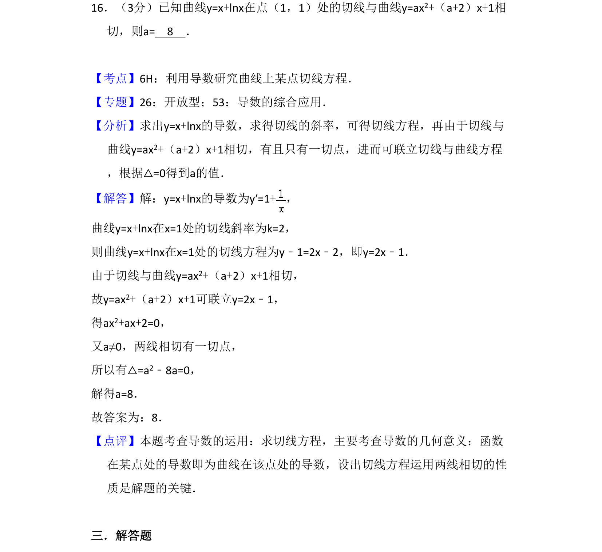
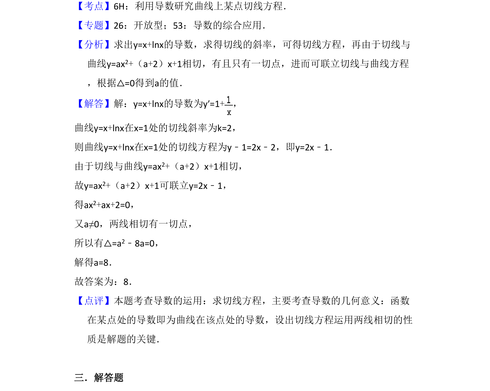

考点：导数几何意义 切线方程 判别式 相切条件

求曲线切线方程，利用导数几何意义及判别式求解参数值

📄 原 PDF 第 12 页：
素材/真题/吉林/2008-2024·（吉林）数学高考真题/2015年高考数学试卷（文）（新课标Ⅱ）（解析卷）.pdf
16．（3分）已知曲线y=x+lnx在点（1，1）处的切线与曲线y=ax2+（a+2）x+1相 切，则a= 8 ．
【考点】6H：利用导数研究曲线上某点切线方程．菁优网版权所有 【专题】26：开放型；53：导数的综合应用． 【分析】求出y=x+lnx的导数，求得切线的斜率，可得切线方程，再由于切线与 曲线y=ax2+（a+2）x+1相切，有且只有一切点，进而可联立切线与曲线方程 ，根据△=0得到a的值． 【解答】解：y=x+lnx的导数为y′=1+， 曲线y=x+lnx在x=1处的切线斜率为k=2， 则曲线y=x+lnx在x=1处的切线方程为y﹣1=2x﹣2，即y=2x﹣1． 由于切线与曲线y=ax2+（a+2）x+1相切， 故y=ax2+（a+2）x+1可联立y=2x﹣1， 得ax2+ax+2=0， 又a≠0，两线相切有一切点， 所以有△=a2﹣8a=0， 解得a=8． 故答案为：8． 【点评】本题考查导数的运用：求切线方程，主要考查导数的几何意义：函数 在某点处的导数即为曲线在该点处的导数，设出切线方程运用两线相切的性 质是解题的关键． 三．解答题